Odoo 20 Community · Backend theme · Free · LGPL-3
A calm, modern backend for Odoo
A sidebar with your apps and menus, an app launcher, a clear page header, light and dark schemes and your own accent colour. Lists, forms, kanban, calendar and reports keep everything Odoo does; they simply read better.
Sidebar & app launcher
Light, dark or system
Your colours, contrast-checked
Desktop, tablet, phone
English · Українська · Русский
11
accent presets + any colour
Every view, considered
Lists and kanban columns as cards, forms on a calm sheet, a calendar with tinted events, pivot and graph in your accent. Real Odoo screens with demo data.

Form · status bar, actions as a toolbar, notebook tabs
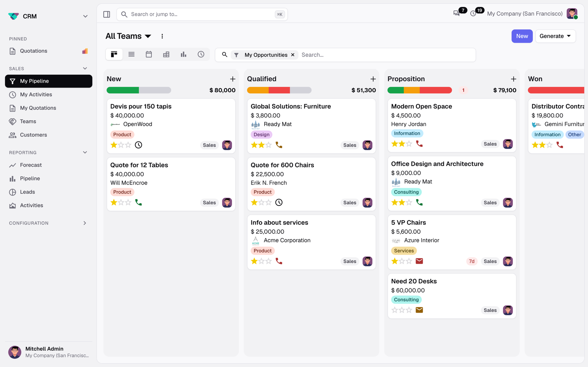
Kanban · columns as cards with progress bars

Calendar · tinted events, today and the now line in the accent
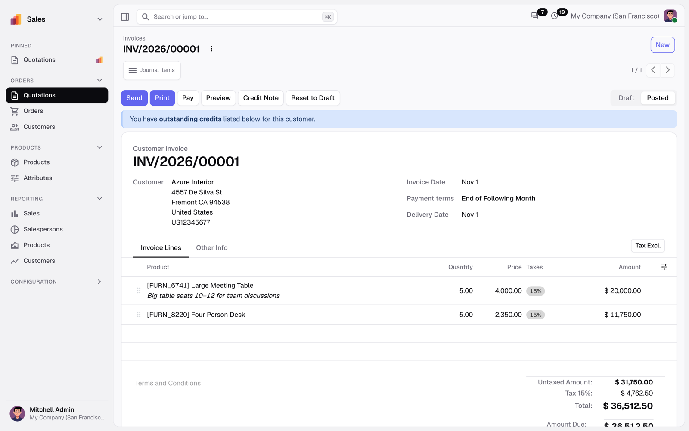
Invoice · tabular figures that line up
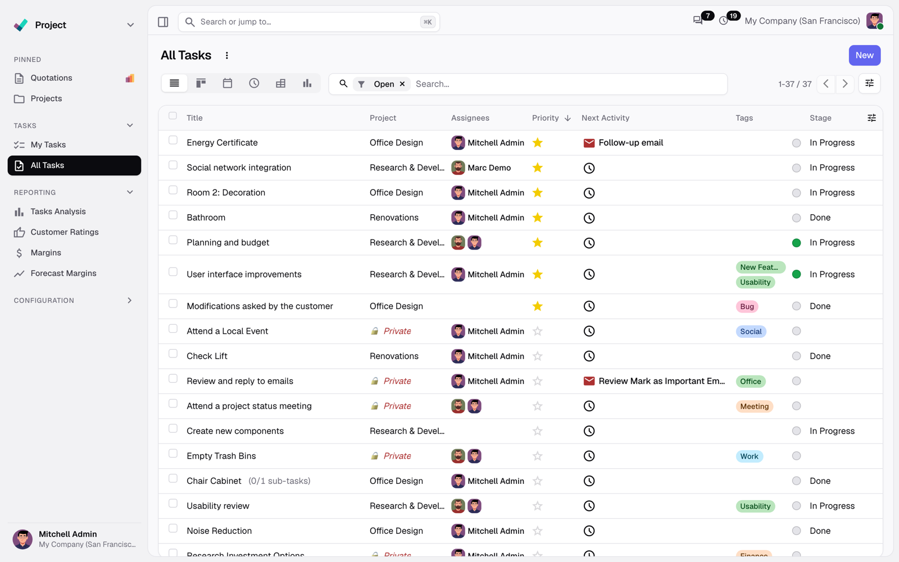
List · Project tasks with tags, priorities and avatars
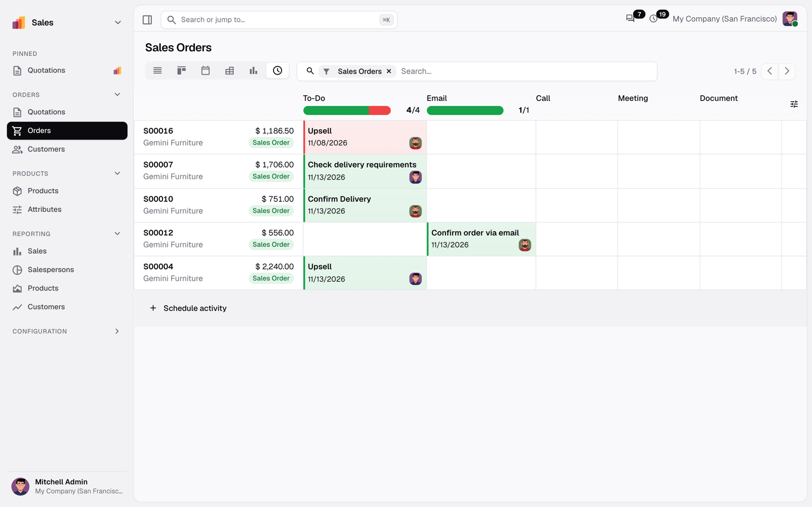
Activities · soft tints with a coloured edge
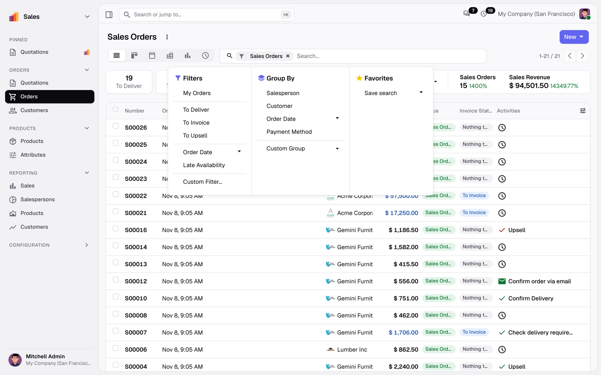
Search · filters, group by and favourites
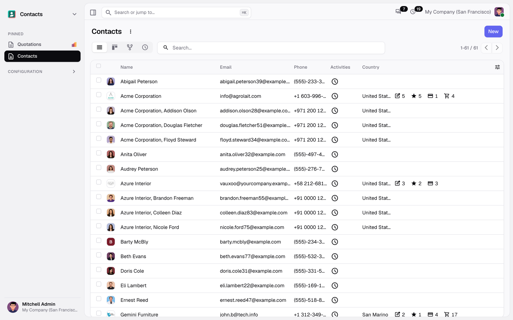
Contacts · a long list that stays easy to scan
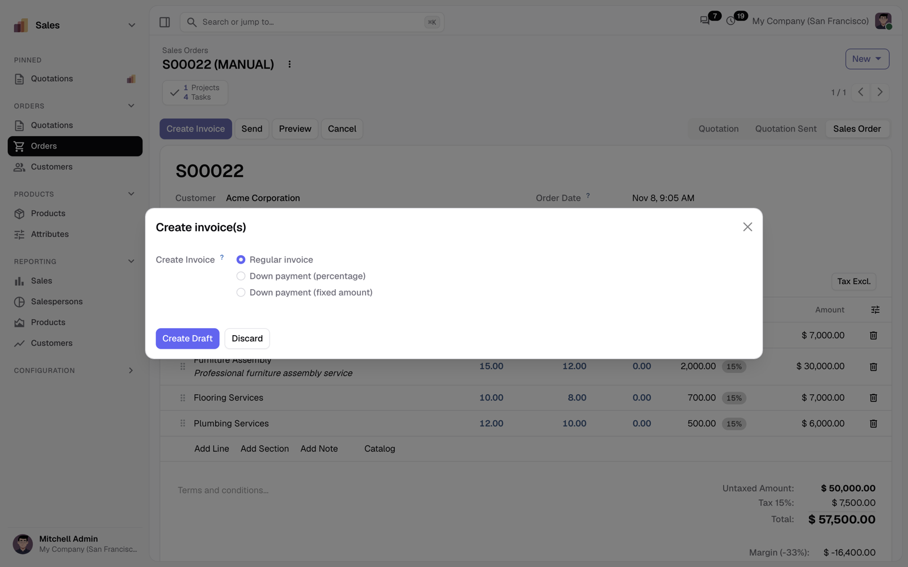
Dialogs · wizards and confirmations
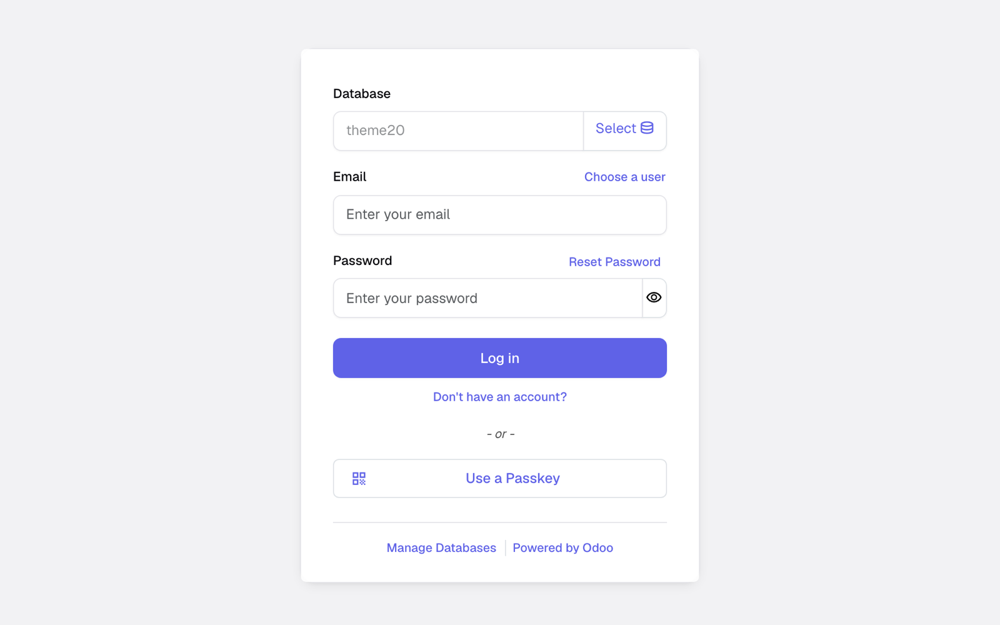
Login · the database sign-in page matches the backend
A dark scheme made for long days
The same design, inverted with care: deep neutral backgrounds, soft borders, a lighter accent for links. Each user chooses Light, Dark or System in the user menu, and the page switches without a reload.

CRM pipeline
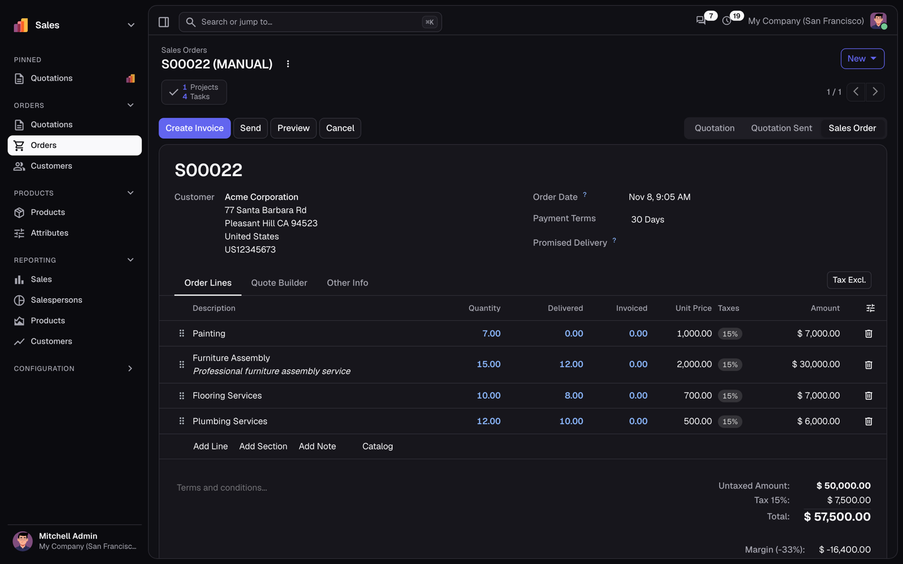
Sales order
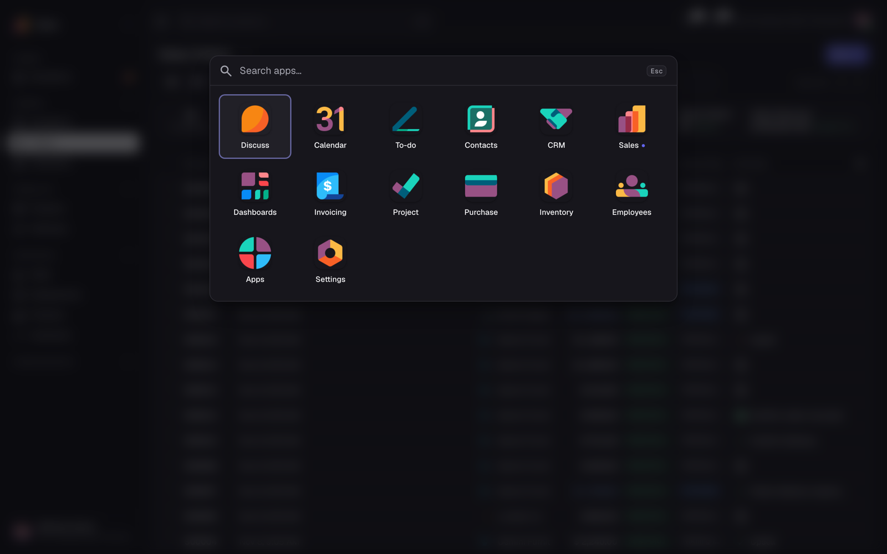
App launcher
Find anything in two keystrokes
The sidebar shows where you are, the launcher shows everything, the command palette finds the rest.
App launcher
Every app on one screen. Type to filter, move with the arrow keys, open with Enter, close with Escape. Recently opened records are listed below the apps. Open it with All apps in the switcher or Alt H (Ctrl H on macOS).
App switcher and pins
The app name at the top of the sidebar opens a searchable list of apps. Hover any menu entry and click the pin to keep it at the top of the sidebar, whichever app you are in. Pins are saved per user.
Icons only, when you need the room
The button left of the search field, or Ctrl B (Cmd B on macOS), folds the sidebar into an icon rail with tooltips. The choice is remembered per user, and wide lists and forms gain the space.
Keyboard shortcuts
| Action | Windows / Linux | macOS |
|---|
| App launcher | Alt + H | Ctrl + H |
| Sidebar: expanded / icons only | Ctrl + B | Cmd + B |
| Search or jump to (command palette) | Ctrl + K | Cmd + K |
| Move in the sidebar or the launcher | Arrow keys, Home, End |
| Open the focused entry / close the launcher | Enter / Escape |
Make it yours in a minute
Administrators set the company look; every user sets their own scheme, density and sidebar.
Settings › Backend Theme
- Accent colour: eleven presets, a colour picker or a hex value.
- Neutral palette: Zinc, Slate, Stone or Gray.
- Corner radius: Square, Small, Medium or Large.
- Density: the company default, Comfortable or Compact.
- Company logo at the top of the sidebar.
The preview shows light and dark before you save. Saving compiles the styles once for everyone.
Any colour stays readable
A light accent such as amber would make white button text hard to read. The theme deepens the button colour only as much as WCAG AA (4.5:1) needs, or switches the text to dark, and derives link colours for light and dark cards. The settings tell you when a colour was adjusted.
My Preferences › Appearance
Every internal user chooses the colour scheme (Light, Dark, System), the density (company default, Comfortable, Compact) and the sidebar (Expanded or Icons only). A user can change only their own preferences.
At home on tablets and phones
Below 992 px the sidebar becomes an icon rail; on phones it slides in from the menu button, with the app switcher, pins and the full menu.
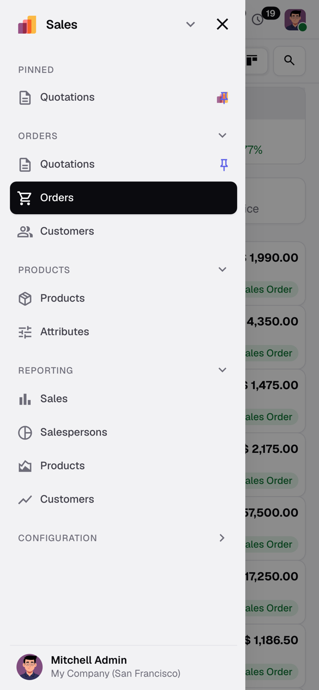
Slide-in menu
Set up in three steps
1
Install
Put the rex_backend_theme folder in your addons path and restart Odoo. In Apps, click Update Apps List, remove the Apps filter, search Rex Backend Theme and install. The backend switches to the theme at once, for every user.
2
Set the company look
Settings › General Settings › Backend Theme: accent, palette, radius, default density and the sidebar logo. Check the preview, then Save. Users see the new colours after a reload.
3
Let people choose
User menu › My Preferences › Appearance: colour scheme, density and sidebar mode. The Light / Dark / System switch is also right in the user menu.
Requirements
- Odoo 20.0 Community. For Odoo 19.0, choose version 19.0 of this module.
- Depends only on
web, web_tour and base_setup.
- No Python packages, no outside services: fonts and icons ship with the module.
- Multi-company and multi-language databases are supported.
From the command line
git clone -b 20.0 https://github.com/johnyraid33/odoo-backend-theme.git
odoo -d DATABASE \
--addons-path=odoo-backend-theme,ODOO/addons \
-i rex_backend_theme
Use -b 19.0 for Odoo 19. The complete guide is in the Documentation tab of this page.
Questions
Will my other modules still work?
Yes. Odoo's navbar, control panel and their CSS classes stay in the page, so modules that extend them and their guided tours keep working. It was checked with the tests and tours of Sales, CRM, Invoicing, Inventory, Purchase, Project, Employees, Calendar and Contacts.
Does it change my website or PDF reports?
No. Only the backend and the database login page are styled. Website, portal and PDF reports keep their own look.
Does it work with Odoo Enterprise?
It is made for Community. Enterprise replaces the web client with its own home menu and navbar; do not install both. Uninstall any other backend theme first as well.
How do I go back to the standard look?
Uninstall the module. Odoo's own look returns, and the compiled customisation and the theme settings are removed with it.
Can each user have their own colours?
The accent, palette and radius are set for the whole database by an administrator. The colour scheme, density and sidebar mode are personal.
Does it collect data or call outside servers?
No. It sends nothing anywhere and loads nothing from outside: the Geist font and the icons are part of the module.
Which languages are included?
English, Ukrainian and Russian. The font covers Latin and Cyrillic; other languages can be added with a standard .po file.
Is it accessible?
Text, buttons and links meet WCAG AA contrast in light and dark for every preset; the sidebar, launcher and settings work with the keyboard and have visible focus rings.
Rex Backend Theme by POLISHCHUK & SONS LTD · LGPL-3 · Geist font under the SIL Open Font License